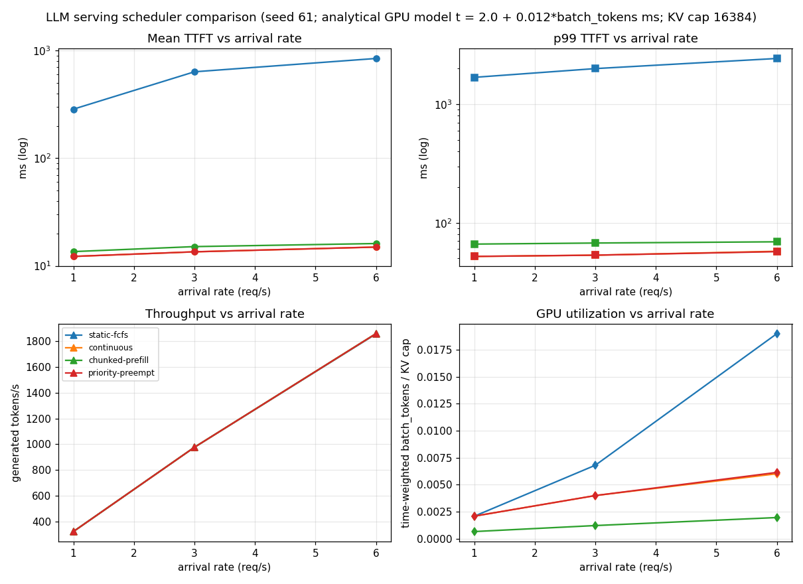

Continuous batching vs chunked prefill vs preemption: a scheduling shootout
How a serving engine schedules requests across GPU iterations decides the latency every user feels. A single 4k-token prompt prefetched in one iteration stalls every in-flight decode; a fixed batch that runs to completion head-of-line-blocks everything behind it; and under KV-cache pressure, someone has to decide which request loses its slot. These tradeoffs are usually argued from intuition. sched-lab measures them.
Most scheduling discussions compare policies qualitatively ("continuous batching is better") or on production systems where the workload, the hardware, and the scheduler change at once. There was no small, reproducible harness that isolates the scheduling policy — same seeded workload, same analytical GPU cost model, same KV budget — and reports TTFT/TBOT tails, throughput, and utilization per policy.
src/llm_inference_engine/sched_lab/sim.py implements an iteration-stepped discrete-event simulator behind one Scheduler interface:
prompt_len + generated_so_far tokens on rescheduling — the recompute cost is charged honestly as extra batch tokens in later iterations, and counted in the metrics.GPU model: each iteration costs t = T0 + K * batch_tokens (T0 = 2.0 ms, K = 0.012 ms/token). KV cache is a hard 16384-token budget; each admitted request reserves prompt_len + gen_len up front. Workloads are Poisson arrivals with a mixed shape (chat prompts 32–512 tokens, document prompts 1024–4096). Everything is seeded (np.random.default_rng(61)); three consecutive runs produce byte-identical headlines, results.md, and charts.png.
| High load (6 req/s) | Mean TTFT | p99 TTFT | Throughput |
|---|---|---|---|
| static-fcfs | 844.6 ms | 2437.1 ms | 1861 tok/s |
| continuous | 15.0 ms | 57.5 ms | 1861 tok/s |
1500 requests/cell, seed 61, 3 runs byte-identical. Scheduling moves latency, not capacity: throughput is identical. Chunked prefill bounds worst-case iteration latency to 25.7 ms vs 149.5 ms (−82.8%). Priority preemption: 14 preempts cost 4.88% recompute for −87.9% short-request p99.

experiments/run_experiments.py — re-running reproduces these exactly.src/llm_inference_engine/sched_lab/
sim.py # iteration-stepped discrete-event simulator, 4 policies
08-sched-lab/
experiments/run_experiments.py # load sweep + burst + preemption cost
results/ # results.md + charts.png (generated)
Full source, tests, and experiment code: 08-sched-lab/ ·
Run: cd 08-sched-lab && python3 experiments/run_experiments.py